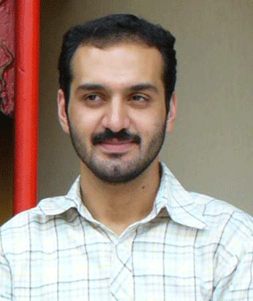

پذيرش > تریبون > مقالات > کمپین تغییر برای برابری، یک الگوی همگرایی


 کمپین تغییر برای برابری، یک الگوی همگرایی کمپین تغییر برای برابری، یک الگوی همگرایی
9 آذر 1385 - ایمان مظفری - نسخه قابل چاپ
تاریخ جنبش زنان ایران، گویای وضعیت مهمی است. در خلال سال های 1289 تا 1311 ما در برابر جنبشی قرار گرفتیم، که موجب تاثیر گذاری در چند دهه ی بعد شد.
از انتشار نخستین گاهنامه زنان تا انحلال آخرین سازمان مستقل زنان، نه تنها مجموعه ی مختلفی از مطالبات زنان پیش روی مان قرار گرفت، بلکه دست مایه های قدرتمند فکری برای ادامه دهندگان جنبش زنان را فراهم آورد.
در آن سال ها، دست كم در بخشی از شهرهای بزرگ ایران، فعالیت جنبش به شکل روشنی در فضای فرهنگی و اجتماعی رقم خورد، آنچنان که هم اکنون نیز این فضا مورد توجه است.
بررسی سیر تحولات جنبش زنان از منظر تاریخی، نشان دهنده ی گسست ها و پیوندهای متنوع در شرایط زمانی و مکانی متفاوت است.
جنبش زنان اکنون در تلاش برای تغییر قوانین از طریق گسترش فضای همگرایی است. شیوه ای که بتواند به گسست تاریخی جنبش زنان خاتمه دهد و امیدهای تازه ای به سوی همگرایی های پایدار برای تغییر را ایجاد کند.
در عین حال ممکن است اراده برای همگرایی ها پایدار باشد، اما هنوز قطعیت نیافته است. قواعد هنوز روشن نیستند و هم اکنون در حال تجربه هایی هستیم که بدان ها عادت نکرده ایم. با این همه، يك چيز روشن است و آن اين که جنبش زنان چون گذشته، پراكنده نيست.
تحول درونی در بازیگران جنبش
ورای دگرگونی هایی که در جنبش های اجتماعی دهه های اخیر رخ داده، اما تحولی در سرشت خود بازیگران جنبش ها نیز به وقوع پیوسته است. آنچنان که در جنبش زنان ایران هم قابل مشاهده است.
به موازات اینکه جامعه به تجربه های جدیدی در مبادله های بازار، صنعت و تکنولوژی ،سبك زندگی، برداشت از هويت خود ، مفهوم لذت و سعادتمندی، دسترسی به ابزارهای ارتباطی جهان وطنی دست می یا بد، بازیگران جنبش زنان نیز به واسطه ی تاثیر پذیری از این تجربه ها، دچار دگرگونی هایی شده اند. انحصار نقش آفرینی در جنبش از «موقعیت های ویژه» شکسته شد و همه اعضای جنبش دریافتند که می توانند به یک میزان برای جنبش فعالیت کنند.ودر آن، جايگاه خاص خود را داشته باشند. آنها تاثیر فعالیت هایشان را در روند پیشرفت یا پسرفت اهداف جنبش به عینه مشاهده ميكنند.
روشن است كه متوليگرايي و انحصار در کنشگری برای جنبش، شاید با رشد تعهدات اجتماعي، فكري، اخلاقي، وبه خصوص عینی تر شدن آرمان های همگرا ( برای رسیدن به تغییرات مطلوب)، شكسته خواهد شد و به تدريج رو به زوال خواهد رفت.
اما آرمان های عینی همگرا برای بازیگران کدام اند و آیا امکان ظهور برای جنبش زنان را دارند؟
كمپين شكل اعلاي همگرايي
در سال 1384، تجمع اعتراض آمیز زنان به تبعیض های موجود در قانون اساسی در مقابل درب دانشگاه تهران، دگرگونی هایی را که از سال ها قبل در جریان بود، به منصهی ظهور درآورد هرچند بسیاری از این دگرگونی ها دست کم از اواسط دهه ی پنجاه، در جریان بوده و گاه سبب همگرایی هایی میان بازیگران جنبش شده بودند.
ایران پس از دوم خرداد 76؛ به واسطه ی تغییر در سیاست گذاری های دولتی، نمونه های در خور توجهی از همدلي و همگرایی بين فعالان جنبش زنان را به خود دیده است که از آن میان می توان به گسترش نهادهای مدنی زنان، توسعه حوزه نشر و افزایش فعالیت نویسندگان با رویکردهای فمینیسیتی، توجه کارگردانان تئاتر و سینما به مسئله ی زنان و ... و در آخر و مهمتر از همه شکل گیری فعالیت هایی در قالب «کمپین» اشاره کرد.
ظهور کمپین يكميليونامضا در ایران نشان دهنده ی شکل اعلای همگرایی میان فعالان جنبش زنان (با رویکرد های گوناگون و تفاوتهاي فكري شان است). در حال حاضر این نوع از وفاق و همدلي، از اهمیت بیشتری برخوردار شده است. بر این اساس ما شاهد وجود به هم تنیدگی و اشتراك عمل روزافزون بازیگران جنبش زنان هستیم.
علایقی برای پیش رفتن در چنین مسیری ممکن است در جاهای دیگر مانند جنبش دانشجویی، جنبش کارگری و ... هم دیده شود. اما آنها هنوز فاصله های زیادی برای تمرکز بر نقاط همگرایی خواهند داشت.
در عین حال، طی سال های گذشته ، موج واگرایی و انفعال در میان کنشگران جنبش زنان ایران ــ به اندازه ی تمام ابهت همگرایی امروز ــ ، وجودی شگفت انگیز و پرحادثه داشته است. این موج تاثیرات خود را در موقعیت های مختلف پراکنده است. بنابراین می توان گفت، هنوز هم نقاط واگرا موجودند و در شرايطي بحراني ميتوانند بار ديگر چونان آتشفشاني ويرانكننده فعال شوند. اگر چه ممکن است در نگاه اول، با فضاي پراميد و همگرایی های موجود متناقض به نظر آيد. اما برآنم که هماكنون نيز بسیاری از جنبه های واگرایی در پیوستگی با همگرایی موجودند. ــ هرچند فعال نيستند.
کمپین تغییر برای برابری
کمپین تغییر برای برابری، چند ماهی است که به گردونه ی شکل دهی روابط جدید در میان بازیگران جنبش زنان وارد شده است.
جمع آوری یک میلیون امضاء در اعتراض به قوانین تبعیض آمیز در قانون اساسی ایران بر علیه زنان و ارائه ی آن به مجلس قانونگذاری برای اصلاح در موادی چون : ارث، دیه، طلاق، حضانت فرزند، ازدواج و ... آرمان های آن هستند.
می توان گفت، ظهور کمپین «تغییر برای برابری»، اعتراضی درونی شده میان اعضای جنبش زنان، نسبت به خمودگي و واگرایی های متاثر از پراکندگی و بي برنامگي جنبش بوده است. هر چند در یکی از اهداف این کمپین گفته شده است که جمع آوری یک میلیون امضاء می خواهد نشان دهنده ی میزان گستردگی مطالبات زنان و اعتراضشان نسبت به تبعیض های قانونی باشد، اما در نگاهی دیگر می توان آن را محصول واگرایی های موجود در میان بازیگران جنبش زنان دانست.
بنابراین آنها که به تبعات ويرانكنندهي حاصل از پراکندگی پی برده بودند، خواه یا ناخواه می بایست به رهیافتی می رسیدند که بتواند اتفاق نظر کلیه ی کنشگران متفرق را موجب شود. نبود این رهيافت، همان نقطه ای بود که در سیر تاریخی نیز جنبش زنان از آن رنج می برد. یعنی «عدم همگرایی در مطالبات».
اما آیا برای کسی، مسئله ای مهمتر از نارسایی در قوانین، وجود داشت. مطالبه ای که به اعتقاد بسیاری، منشاء و سرآغاز تبعیض های موجود در جامعه است؟
تجربه ی مشترک زنان نسبت به نارسایی های قانون
تبعیض های موجود در قوانینی چون قانون مدنی، مهمترین حوزه ای بود که می توانست میان زنان عامل همگرایی باشد. راهرو های دادگستری و مراجعه کنندگان به دادگاه های خانواده را اغلب زنانی تشکیل می دادند که نسبت به رویه های قضایی و مواد قانونی، اعتراض های هر چند خاموشی را با خود به همراه داشتند.
این تجربه مشترک که عموما از گستردگی نیز برخوردار است، روح همگرایی بوده است. در گام جلوتر می توان گفت، این تجربه ی مشترک، کم کم خود به منبع همگرایی بدل کرد و موجب گردید تا کمپین تغییر برای برابری، موجب توسعه ی روابط میان کنشگران فعال و خاموش جنبش گردد.
مشخصه های کمپین تغییر برای برابری
مشخصه ی بارز کمپین تغییر برای برابری را باید در عدم تشخیص نقطه ی ثقل یا هماهنگ کننده ی آن دانست.
کمپین تغییر برای برابری، انحصار «موقعیت ویژه» برای برخی از بازیگران جنبش را زیر سئوال برد و به زوال برخی ایده های جهانشمول در باب جنبش ها کمک کرد.
کمپین تغییر برای برابری نشان می دهد، که فرد کاریزما، به همان اندازه می تواند در موفقیت های یک حرکت مدنی تاثیر گذار باشد، که یک فرد معمولی اما موافق با چارچوب مطالبات کمپین.
این مشخصه ی منحصر به فرد کمپین ، کمک کرد تا نقاط فعال واگرایی در ميان فعالان جنبش زنان، هر روز ضعيفترشود. اگر نقاط واگرایی در گذشته باعث تحلیل بردن انرژي فعالان و از دست رفتن برخی از موقعیت های مطلوب برای جنبش زنان می شد، اما هم اکنون نقاط همگرایی که ثمرهي عبور موفقتآميز از چاهويل واگرایی های گذشته هستند، کمک می کند تا فعالیت جنبش بیش از پیش با قاطعیت و شادابي به سمت استفاده از موقعیت مطلوب گام بردارد.
کمپین تغییر برای برابری، یک الگوی همگرایی
کمپین تغییر برای برابری با انرژي گرفتن از عوامل همگرا ساز و وحدتآفرين، موجب می شود تا جنبش زنان که گاهی تجربه های ناموفقی از واگرایی ها را تجربه می کرد، با تدوين ایده های همگرا ساز، پیوند مشترکی میان کنشگران خود به وجود آورد.
همواره بحث اصلی این بود، چه ایده ای به جامعه منتقل شود که هم بتواند جنبش را به نقاط اشتراك و همگرايي سوق دهد و هم اینکه بتواند اعضای آن را به کنشگرانی فعال و پراميد، ارتقاء دهد. آزمون های جنبش های اجتماعی حکایت از آن داشت که جنبش هایی موفق شدند که توانسته باشند موانع موجود بر سر راه برقراری ارتباط گفتمانی میان نخبگان خود و توده های مردم را از میان بردارند. موضوعی که در کمپین تغییر برای برابری - در متن اصلی بیانیه ی آن – به روشني قابل تشخیص است.
عوامل موثر بر همگرایی در کمپین تغییر برای برابری
نخستين عامل تاثیر گذار بر همگرایی، «حمایت اجتماعی و فکری» از تغییر برای برابری است. این عامل موجب می شود تا جنس مشارکت اعضای کمپین کم کم تغییر پیدا کند.
نمونه ی بارز آن در برخی از شهرستان ها رخ می دهد. براي نمونه عضوی که پیش از این تنها به عنوان یک امضاء کننده ی کمپین، نقش آفرینی داشت، پس از مدت کوتاهی، ظرفیت هایش را بالاتر از یک امضاء کننده ی صرف می بیند و خود پیشنهاد می دهد که می تواند این موضوع را در میان دوستان، همكاران یا بستگان خود مطرح کند. کمپین به عبارتی همراه با گرفتن حمایت های اجتماعی و فکری، به افزایش ظرفیت های موجود در کنشگران خاموش، کمک دو چندان می کند. جنس رفتار انسان ها دائما در حال تغییر به سوی رشد است و هر کس دوست دارد بیشتر از گذشته نقش آفرین این کمپین باشد، چرا که میزان تاثیرگذاری تلاش های خود را به شکلی ملموس مشاهده ميكند..
دومین عامل تاثیرگذار بر همگرایی در کمپین تغییر برای برابری، «استقلال فردی» در عین یک حرکت جمعی است. فرددر فرآيند مبارزهي اجتماعياش، گشايش و آزادي عمل حس ميكند يعني حوزه مستقلی برای فعالیت خود می بیند و به دلیل آنکه مشخصه ی اصلی کمپین –آنچنان که در بالاتر گفته شد – آن است که هیچ مرکز ثقلی وجود ندارد تا فعالیتهای کنشگران را به انحصار خود درآورد، در نتيجه، از روح دموکراتیزه ی بالایی برخوردار است. فرد در مقام کنشگر اجتماعی در می یابد که در حوزه ی رفتار اجتماعی خود بسیار مستقل است و این استقلال موجب می گردد تا بیش از پیش بتواند در نحوه ی فعالیت خود انعطاف پذیری داشته باشد.
در کمپین تغییر برای برابری، کسی برای کسی کار نمی کند.رابطهي فرماندهي و فرمانبري، پيشواو توده و... وجود ندارد. هر کس براي دل خودش کار می کند ، برای اندیشه اش، برای آگاهی تبلور یافته ای که دست مایه های اصلی اش، تجربه مندی خودش هستند.
فضایی عجیبی شکل می گیرد. فضايي تازه، فضايي براي تنقس، فضايي براي آفريدن، براي خلاقيت، بروز استعدادها، .... ممکن است کنشگر به طور جدی به تفکر در این مفهوم ننشسته باشد اما آنرا تجربه و لمس می کند. اینکه «عمل فردی انجام می دهم اما تبلورش را در حرکت جمعی جستجو می كنم» به عبارتی یک حس دوگانه و در عین حال مطلوب: «هم يكه و هم پیوند خورده با جمع»: كثرت در عين وحدت
نقش فن آوری ارتباطی در همگرایی میان اعضا
فن آوری ارتباطی با کارکردهای ظریفش موجب شده است تا قضاوت در مورد کمپین از جنبه شخصی فراتر رود و منجر به همگرایی در فضای جمعی شود. به نظرم ، اینترنت و استفاده از پست الکترونیک شخصی به شکل اجتناب ناپذیری کمک کرد تا ایده های بنیادین رها شود و فاصله ی مکانی و زمانی میان کنشگران به حداقل های موجود برسد.
این ویژگی مهمی است که اعضاء احساس کنند در کوتاه ترین فاصله، نسبت به آخرین تصمیم گیریها مطلع می شوند و در عین حال می توانند به شکلی مستقیم در روند تصمیم گیری ها موثر باشند. هم اکنون اینترنت مهمترین فن آوری برای برقراری پیوند میان کنشگران داخلی کمپین تغییر برای برابری است.
این بدیهی است که انسان ها نیاز به وسایلی دارند که بتوانند آنها را در مقام کنشگران از محدودیت های موجود به پهنهي فضاهای واقعی برهاند و در عین حال به همان نسبت بتوانند انگیزه های خود را در فضاهای مجازی به گونه ای پي گيرند که تاثیراتش را بر فضای واقعی مشاهده كنند..
همگرایی در دنیای مجازی اگر چه ظاهرا از اصالت کمتری برخوردار است، اما واقعیت آن است که در موقعیتی محوری، نقش آفرین است. این ابزار در شرایطی عمل می کند که فضای جامعه عموما بسته و حضور فیزیکی برای کنشگران در فضاهای عمومی شهری محدود است. تجربه ی آخرین تجمع زنان در اعتراض به تبعیض قوانین، در 22 خرداد امسال در میدان هفتم تیر، گواهی بر این مدعاست.
آیا باز هم تجربه ی واگرایی خواهیم داشت؟
پرسش این است که آیا با تمام امیدهایی که از منابع و عوامل همگراساز در جنبش زنان ایران به نام کمپین تغییر برای برابری به وجود آمده،، باز هم باید نگران واگرایی های آینده باشیم؟
آیا همواره بر مدار همگرایی و همدلي خواهیم ماند و تجربه ی تاریخی واگرایی در میان اعضای جنبش زنان از دوران مشروطیت تا دهه های اخیر را مجددا به نظاره نخواهیم نشست؟
آیا روش ها و منش های همگرایی در پیوند دادن اعضاء موثر و پایدار باقی خواهند ماند؟
اینها نگرانی هایی است که معمولا به آینده حوالت داده ميشود. ممکن است تمام خواسته های حق طلبانه با موج های واگرایانه ای نیز مواجه شود. به خصوص اگر هویت مشترک میان کنشگران و احساس نيرومند تعلق داشتن به حرکت جمعی از میان برود، یا زمان هایی که تولید و بازتولید روابط مبتنی بر اعتماد و مشارکت رنگ ببازد و مسیرهایی را بپیماید که به تجزیه روندهای کنونی توجه داشته باشد.
فکر می کنم، نیازمند آن هستیم که ظرافت های موجود در چگونگی پیوند دادن اعضاء را بیشتر مورد بررسی قرار دهیم و توجه داشته باشیم که چگونه می توانيم نقاط همگرایی را بیشتر و قوی تر در سطح جنبش بگسترانيم.
ارسال به
بالاترین
،
توییتر
،
فریندفید
،
فیسبوک
در همين بخش :
 دهمین دورۀ مراسم تندیس صدیقه دولت آبادی ۱۳۹۲ دهمین دورۀ مراسم تندیس صدیقه دولت آبادی ۱۳۹۲
کارت پستالهایی به بهانهی هشت مارس و به یاد همهی مبارزین راه برابری
بیانیه بیش از 350 تن از مدافعان حقوق زنان به مناسبت روز جهانی زن؛ زنان هر روز فرودستتر میشوند
لباسی که برای تن ما دوخته اند! /اعظم بهرامی
چالشها و چشمانداز فعالیت مدنی زنان
ديگر بخش ها :
طرح یک میلیون امضا
|
مقالات
|
سایت نوشته ها
|
اخبار
|
گزارش كمپين
|
گفت و گو
|
علیه سکوت
|
كوچه به كوچه
|
نامه های شما
|
گزارش ویژه
|
گفتگو با اعضا
|
ویژه سالگرد کمپین
|
تصویر برابری
|
دل آرام علی
|
تریبون
|
مقالات
|
تاریخ شفاهی
|
خارج از چارچوب
|
کتابخانه
|
درباره کمپین
|
کمپین در شهرها
|
کمپین در بند
|
صدای تغییر
|
ویژه 22 خرداد
|
لایحه حمایت از خانواده
|
گالری
|
عشا مومنی
|
امیر یعقوبعلی
|
خدیجه مقدم
|
راحله عسگری زاده و نسیم خسروی
|
پروین اردلان،جلوه جواهری، مریم حسین خواه، ناهید کشاورز
|
زینب پیغمبرزاده
|
سعیده امین، سارا ایمانیان، محبوبه حسین زاده، ناهید کشاورز و همایون نامی
|
احترام شادفر
|
نسیم سرابندی زاده،فاطمه دهدشتی
|
وبلاگ مهمان
|
پرونده خرم آباد
|
دستگیری ها
|
مریم مالک
|
پرستو اللهیاری
|
مهرنوش اعتمادی
|
سمیه رشیدی
|
Other Languages
|
همراهان
|
«فراخوان کمپین ده روز با بهاره هدایت»
| English
|